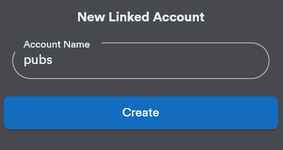
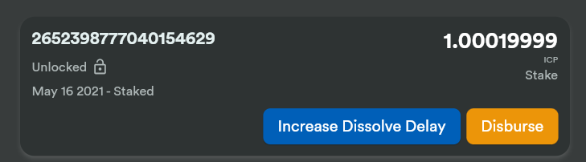

网络神经系统dapp快速入门
Internet Computer 的配置和行为的所有更改都由称为网络神经系统 (NNS) 的算法治理系统控制。 NNS 控制 Internet Computer 区块链配置的所有方面，并负责执行许多网络管理操作。例如，网络神经系统 (NNS) 负责：
-
升级为网络提供计算能力的节点使用的协议和客户操作系统软件。
-
将新的节点操作员和机器引入网络。
-
创建新子网以增加网络容量。
-
拆分子网以平衡网络负载。
-
配置控制用户必须为计算容量支付多少费用的参数。
-
监控容器活动和节点性能来发现恶意行为和统计偏差。
-
停用恶意软件或性能不佳的节点来保护网络。
对网络的更改和更新请求以提案的形式提交给NNS。 NNS 根据神经元持有者的投票情况决定采纳或拒绝提案。
什么是神经元？
为了使网络参与者能够对提案进行投票，他们需要在给定的时间段内质押锁定 ICP 代币来创建一个称为神经元的代理单元。
因为神经元代表 ICP 代币的质押，所以它们也代表具有帐本容器帐户和控制帐本帐户的主体的身份。
神经元通过确保它们所代表的 ICP 代币不能在锁定期的特定时间段内交易，提供了 Internet Computer 负责治理所需的稳定性。
下图提供了创建神经元的工作流程的简化视图以及神经元和帐本容器之间的关系。

连接到 Internet Computer
链接到Internet Computer 来使用网络神经系统 (NNS) dapp：
打开浏览器并打开Network Nervous System (NNS) dapp。 点击 Login 连接Internet Identity。
如果您之前没有注册过，您可以点击 Register with Internet Identity 进行注册。
note: 我们强烈建议您将多个设备和身份验证方法添加到您的 Internet 身份。例如，使用安全密钥注册多个物理设备（例如计算机和手机），并使用这些设备（以及在其上运行的浏览器）支持的身份验证选项。
有关创建 Internet 身份的更多信息，请参阅如何使用 Internet 身份。
注册后，您可以点击 Login 使用您的锚点和您注册的身份验证方法（例如安全密钥或指纹）进行身份验证。 单击 Proceed 以访问网络神经系统 (NNS) dapp。
添加帐户
使用互联网身份登录会在 Internet Computer 分类帐中为您创建一个主帐户。
如果您的 ICP 代币与您的开发者身份相关联； 即 DFINITY Canister SDK dfx 命令行界面创建的身份。 您的主账户显示 0.00 表示您的 ICP 代币余额。
例如：

在转移任何代币之前，您可以创建一个或多个关联子账户或将硬件钱包附加到您的账户。
添加用于管理 ICP 代币的帐户：
-
打开浏览器并导航到Network Nervous System (NNS) dapp。
-
单击 Login 以使用您的 Internet 身份进行连接。
-
验证您的身份证号，然后点击 Login 以使用您注册的设备和身份验证方法进行身份验证。
-
单击 Proceed 以访问网络神经系统 (NNS) dapp。
-
在默认 ICP 选项卡上，单击 Add Account。
-
选择要添加的帐户类型。
-
New Linked Account 创建一个新的子账户，链接到您在分类帐中的主账户地址。
-
附加硬件钱包将硬件钱包添加到分类帐中的主帐户地址。
-
-
点击 New Linked Account，输入账户名称，然后点击 Create。

在账户之间转移 ICP 代币
如果您选择自托管持有您的 ICP 代币，并且这些代币与您的开发者身份相关联，而不是您注册的互联网身份，您需要将 ICP 代币转移到您的帐户网络神经系统（NNS） dapp。
要转移由您的开发者身份控制的 ICP 代币：
-
在本地计算机上打开终端 shell。
-
通过运行以下命令，检查您是否使用了可以控制分类帐帐户的身份：
dfx identity whoami在大多数情况下，您应该看到您当前正在使用您的
default开发人员身份。 例如：…… 默认 ……
-
通过运行以下命令查看当前身份的主体的文本表示：
dfx identity get-principal此命令显示类似于以下内容的输出：
tsqwz-udeik-5migd-ehrev-pvoqv-szx2g-akh5s-fkyqc-zy6q7-snav6-uqe
-
通过运行以下命令检查与您的身份关联的分类帐帐户中的当前余额：
dfx ledger --network ic balance -
通过运行类似于以下的命令将 ICP 代币转移到您的主账户或您创建的链接子账户：
dfx ledger --network ic transfer <destination-account-id> --icp <ICP-amount> --memo <numeric-memo>例如，假设您有以下帐户：

如果您想将一个 ICP 代币转移到`Main`帐户，可以运行以下命令：
dfx ledger --network ic transfer dd81336dbfef5c5870e84b48405c7b229c07ad999fdcacb85b9b9850bd60766f --memo 12345 --icp 1
如果您还想将一个 ICP 代币转移到
pubs帐户，可以运行以下命令：dfx ledger --network ic transfer 183a04888eb20e73766f082bae01587830bd3cd912544f63fda515e9d77a96dc --icp 1 --memo 12346
此示例说明如何将 ICP 代币转换为使用带有
--icp命令行选项的整数。-
您还可以使用
--e8s选项单独或与--icp选项一起指定 ICP 代币的小数单位 - 称为 e8s。 -
或者，您可以使用
--amount指定要转移的 ICP 代币的数量，小数点后最多 8 位，例如，5.00000025。
目标地址可以是在 Internet Computer 网络上运行的账本容器中的地址，您添加的帐户Network Nervous System dapp，或钱包地址 你有一个交换。
如果您将 ICP 代币转移到帐户link：https://nns.ic0.app[Network Nervous System dapp]，您可能需要刷新浏览器才能看到交易反映。
有关使用
dfx ledger命令行选项的更多信息，请参阅dfx ledger。 -
将 ICP 代币存入神经元
将 ICP 代币转移到 Network Nervous System dapp 后，您可以使用 Network Nervous System dapp 创建和管理神经元，对提案进行投票，并在 Internet Computer 上创建容器。
神经元需要参与治理并获得奖励。 要创建神经元，您必须锁定一定数量的 ICP 代币一段时间。创建一个神经元所需的最低股份是一个 ICP 代币。 您可以配置质押的锁定时间，从六个月到最长八年。
质押 ICP 代币：
+ 例如：
+
 . Click Yes, I’m sure to confirm the lock up period, then close the window to review the newly-created neuron properties.
. Click Yes, I’m sure to confirm the lock up period, then close the window to review the newly-created neuron properties.
+

在创建神经元后你可以做什么
锁定赌注并创建神经元后，您可以：
*通过单击开始解锁启动溶解延迟计时器。 * 通过单击 Increase Dissolve Delay 增加溶解延迟时间。 * 通过点击Lockup开始解锁倒计时后停止溶解延迟。 * 增加您质押的 ICP 代币数量。
开始和停止溶解延迟
创建新神经元不会自动启动溶解延迟计时器。 您必须通过单击开始解锁明确启动计时器倒计时。
例如，如果您将溶解延迟设置为一年并希望立即开始倒计时，则应在创建神经元的过程中单击 Start Unlock。 如果您改变主意并想停止当前正在进行的倒计时，您可以点击 Lockup， 单击Lockup 停止溶解延迟后，您可以单击Start Unlock 恢复倒计时，而无需更改现有的溶解延迟时间。 如果您想继续正在进行的倒计时但延长锁定期，您可以单击 Increase Dissolve Delay 然后选择更长的溶解延迟。
将 ICP 代币添加到现有神经元
创建神经元后，您可以增加您在该神经元中质押的 ICP 代币的数量，以增加您的投票权和奖励。 例如，如果您最初持有少量 ICP 代币，然后决定购买额外的代币，您可以选择创建新的神经元或“充值”现有的神经元。
要增加现有神经元的权益：
-
按照Stake ICP utility tokens in a neuron中的步骤使用Network Nervous System (NNS) dapp 质押原始神经元。
-
在 Internet Computer 关联查找交易link：https://dashboard.internetcomputer.org/transactions[transaction dashboard] 获取神经元地址。
您可以使用您的主要 ICP 分类帐帐户的帐户标识符来搜索您的交易。
-
返回Network Nervous System (NNS) dapp，然后点击New Transaction。
-
将交易仪表板中的神经元地址粘贴到 Destination 地址字段中，然后单击 Continue。
-
键入要添加到指定神经元的 ICP 代币的数量，然后单击 Continue。
-
验证交易详情，然后点击 Confirm and Send。
 .验证完成的交易，然后点击关闭。
.单击 Neurons 选项卡以查看增加的股份。
.验证完成的交易，然后点击关闭。
.单击 Neurons 选项卡以查看增加的股份。
配置以下规则
积极参与治理是Internet Computer长期健康的重要因素。 对提案进行投票也是计算您将 ICP 代币锁定在神经元中而获得的奖励的一个重要因素。
然而，直接对提交给 NNS 的每个提案进行投票会带来一些挑战。 例如，当您不在时，可能会提交提案并要求投票，或者提出您缺乏评估专业知识的更改。 为了应对这些挑战，您可以将神经元配置为通过跟随一组神经元的投票来自动投票以采纳或拒绝提案。
为了最大化您的奖励，您应该通过关注与您的利益一致的活跃神经元持有者，对尽可能多的提案进行投票。例如，您可能会在某些主题上关注互联网计算机协会 (ICA)，例如 SubnetManagement 和其他神经元持有者的主题上，例如Governance。
要配置您跟随其他神经元持有者的方式：
-
打开浏览器并导航到Network Nervous System (NNS) dapp。
-
单击 Login 以使用您的 Internet 身份进行连接。
-
验证您的身份证号，然后点击 Login 以使用您注册的设备和身份验证方法进行身份验证。
-
单击 Proceed 以访问网络神经系统 (NNS) dapp。
-
单击 Neurons，然后单击特定神经元标识符的链接以显示其属性。
-
单击编辑关注者。
-
选择一个提案主题。
例如，展开 Governance 主题，然后单击 Enter Followee。
-
选择要关注的神经元持有者，然后单击关注。
例如，单击 Internet 计算机协会的 Follow。

神经元持有者已添加到您当前关注的列表中。
-
对您希望神经元的投票自动跟随一个或多个其他神经元持有者的投票的每个主题重复此操作。
将溶解的神经元分配到一个帐户中
当神经元的溶解延迟计时器达到零时，您可以支付神经元的股份并将其锁定的 ICP 代币余额转移到您指定的分类帐帐户。 执行此步骤后，神经元标识符及其分类账历史将从治理容器中永久删除。
要分配一个神经元并返回其 ICP 代币：
-
打开浏览器并导航到Network Nervous System (NNS) dapp。
-
单击 Login 以使用您的 Internet 身份进行连接。
-
验证您的身份证号，然后点击 Login 以使用您注册的设备和身份验证方法进行身份验证。
-
单击 Proceed 以访问网络神经系统 (NNS) dapp。
-
单击 Neurons，然后单击已达到其溶解延迟期结束的解锁神经元。
例如：
-
点击支付。
例如：

-
输入地址或选择帐户以接收 ICP 代币。
例如，您可以选择
dev-projects关联帐户：
-
验证交易信息，然后点击确认并发送。
例如，检查目标地址是否与
dev-projects链接帐户的预期地址匹配：
-
验证完成的交易，然后点击关闭。
例如：

如果您将 ICP 代币转移到 Internet Computer 分类帐容器中的一个帐户，您可以单击 ICP 选项卡并查看反映的新余额。 例如：

产生新的神经元
当你对提案进行投票时——无论是直接投票还是跟随其他神经元的投票——与你的神经元相关的成熟度都会增加，这反过来会增加你参与治理所获得的回报。 当锁定权益的成熟度达到一个 ICP 的最小阈值时，您可以生成一个新的神经元。 spawn 操作创建了一个新的神经元，该神经元将新的 ICP 余额锁定在账本上。
例如，如果您有一个包含 100 个 ICP 代币的神经元，并且它的成熟度为 10%，您可以生成一个包含大约 10 个新 ICP 代币的新神经元。 对于具有 100 个 ICP 代币的神经元要达到生成的最低阈值，其成熟度需要大于 1%。
从现有神经元生成新神经元后，现有神经元的成熟度降至零。
从现有神经元生成新神经元：
-
打开浏览器并导航到Network Nervous System (NNS) dapp。
-
单击 Login 以使用您的 Internet 身份进行连接。
-
验证您的身份证号，然后点击 Login 以使用您注册的设备和身份验证方法进行身份验证。
-
单击 Proceed 以访问网络神经系统 (NNS) dapp。
-
单击 Neurons，然后单击已达到生成新神经元所需的最低成熟度的神经元。
-
单击生成神经元。
请记住，新生成的神经元的溶解延迟为一天，您可以选择通过解锁 ICP 代币来收集价值，或者增加溶解延迟以收集额外奖励。
有关成熟和产生新神经元的更多信息，请参阅以下文章：
对提案进行投票
你可以选择你看到和投票的提案类型和提案主题—直接或通过关注其他神经元利益相关者—使用网络神经系统dapp中的过滤器。 例如，如果你想审查和投票所有涉及网络参与者的提案，如数据中心身份和节点运营商，但对查看与ICP当前市场价值有关的提案不感兴趣，如国际货币基金组织（IMF）特别提款权（SDR），你可以选择参与者管理主题过滤器，取消选择*ExchangeRate*主题过滤器。
要对提案进行手动投票。
-
打开浏览器并导航到网络神经系统（NNS）dapp。
-
点击登录，使用您的互联网身份进行连接。
-
验证您的身份号码，然后点击登录，使用您注册的设备和认证方法进行认证。
-
点击程序，进入网络神经系统（NNS）应用程序。
-
点击投票。
您可以单击列出的任何提案以查看有关提案的信息，包括提案的简要说明、用于查看有关提案的其他信息的link、通过或拒绝提案的投票数以及投票数 由你的神经元投射。
-
使用主题、奖励状态和提案状态过滤器来控制显示的提案列表。
例如，打开“主题”列表以查看是否有任何要包括在提案列表中但当前未显示的提案主题，然后打开“提案状态”以验证您正在查看所有打开的提案。
-
单击任何 Open 提案以查看其详细信息以及与您的身份相关的神经元的投票权。
-
选择您要用于投票的具有投票权的神经元标识符。
-
点击 Adopt 或 Reject 进行投票。
有关投票和投票奖励的更多信息，请参阅以下文章：
提交提案
目前，您只能使用 DFINITY Canister SDK 命令行界面 (dfx) 通过调用`governance` 容器向网络神经系统提交提案。
用于处理 governance 容器的单独命令行工具 (icx-nns) 正在开发中，此功能也将提供link：https://nns.ic0.app[Network Nervous System (NNS)] dapp 很快。
但是，如果您想立即开始提交提案，您可以下载版本来访问 icx-nns 命令行工具的初步版本link：https://github.com/dfinity/icx- nns/releases[icx-nns] 存储库。
部署一个带有燃料费的容器
您必须拥有 cycles 才能创建和管理canisters，类似于智能合约。 Network Nervous System (NNS) dapp 通过使您能够将 ICP 代币转换为循环并将循环附加到特定的容器标识符，为您提供了一种创建和管理容器的便捷方式。
要创建新容器：
+ 如果你已经有一个cycles wallet canister，你可以点击Link Canister to Account中将一个现有的canister标识符链接到你的账户link：https://nns.ic0.app[Network Nervous System (NNS)]应用程序。 .选择您持有 ICP 代币的账户之一作为源账户。
+ 例如，如果您同时拥有一个 Main 帐户和一个 Dev-Projects 帐户，则您可以选择 Dev-Projects 帐户，前提是该帐户持有您希望转换为周期的 ICP 代币. .单击 Amount 并键入要转换为周期的 ICP 代币或 e8 的数量，然后单击 Review Cycles Purchase。
+ 您指定的数量必须转换为大于创建新容器标识符所需的最小 2T（两万亿）周期的值。 例如：
+
 . 查看 ICP 代币以了解周期详细信息，然后单击 Confirm 继续。
. 查看 ICP 代币以了解周期详细信息，然后单击 Confirm 继续。
+ 点击确认后，您可以查看： - 新的容器标识符 - 容器可使用的燃料费次数 - 当前对新容器具有完全管理权限的控制主体
+ 要更改用作容器控制器的主体，请单击 Change Controllers。
+ 要向容器添加燃料费，请单击 Add Cycles。 . 返回到 Canisters 选项卡以查看您创建的容器。
+ 例如：
+